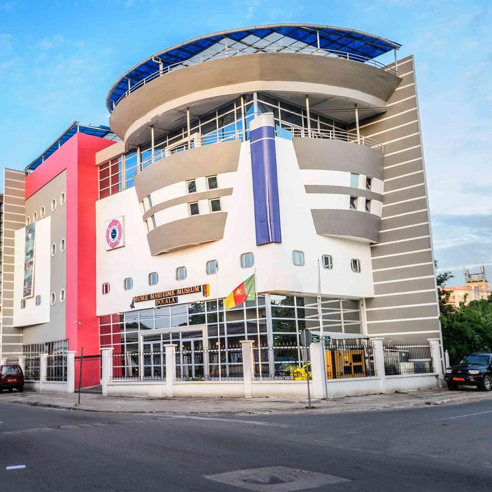

Categorie(s):
loisirs,
detente
Le musée maritime
Le Musée Maritime de Douala s’inscrit donc dans un vaste programme de collecte, de conservation et de diffusion du patrimoine culturel de la côte camerounaise et de valorisation de son histoire en vue de mieux comprendre et connaître le paysage maritime camerounais et son évolution au fil des années.
Grâce à une muséographie adaptée à la thématique, le Musée Maritime de Douala retrace l’histoire maritime et portuaire du Cameroun à travers une collection variée d’objets historiques, patrimoniaux et artistiques. C’est le cas notamment, des archives, des sculptures, des photographies, des cartes, des tableaux, des vidéos, des animations multimédia, autant d’éléments pour faciliter la compréhension des visiteurs.
Le Musée Maritime de Douala dispose également d’un simulateur. Véritable outil de formation, ce simulateur est mis à la disposition des professionnels ou des apprenants pour la suite de leur formation. Cet appareil permet de reconstituer l’environnement d’une séance de navigation et permet également aux visiteurs d’avoir une idée sur les techniques de navigation.